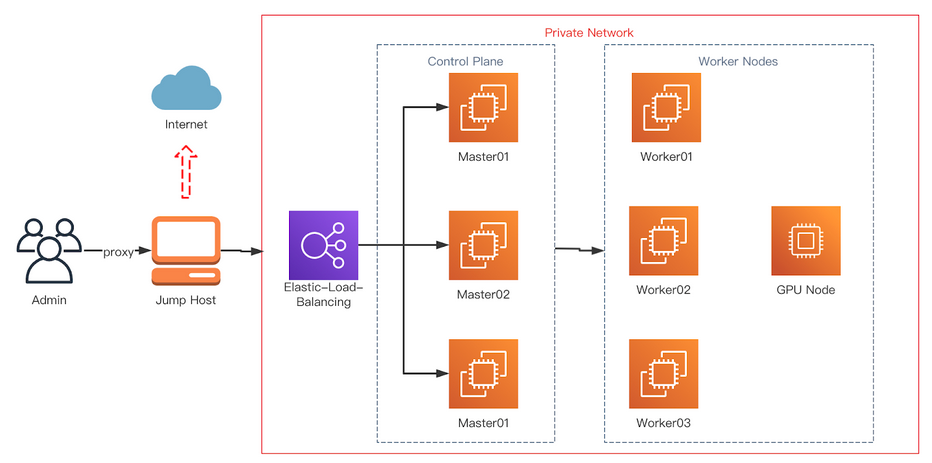
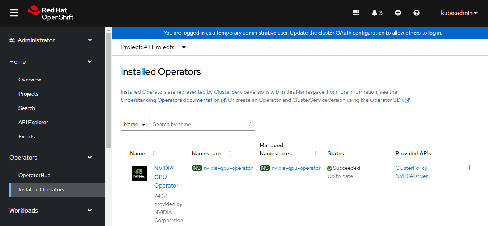

Deploy GPU Operators in a disconnected or airgapped environment#
Introduction#
This page describes how to successfully deploy the NVIDIA GPU Operator on a Openshift Container Platform cluster in a disconnected or airgapped environment.
For OpenShift Container Platform clusters that are installed on restricted networks, also known as disconnected clusters, Operator Lifecycle Manager (OLM), by default, cannot access the Red Hat-provided OperatorHub sources hosted on remote registries because those remote sources require full Internet connectivity.
However, as a cluster administrator you can still enable your cluster to use OLM in a restricted network if you have a workstation that has full Internet access. The workstation, which requires full Internet access to pull the remote OperatorHub content, is used to prepare local mirrors of the remote sources, and push the content to a mirror registry.
The mirror registry can be located on a bastion host, which requires connectivity to both your workstation and the disconnected cluster, or a completely disconnected, or airgapped, host, which requires removable media to physically move the mirrored content to the disconnected environment.
The following figure shows a typical topology of a disconnected cluster.
{kind=link}
This guide describes the process required to enable OLM in restricted networks:
Disable the default remote OperatorHub sources for OLM.
Use a workstation with full Internet access to create and push local mirrors of the OperatorHub content to a mirror registry.
Configure OLM to install and manage Operators from local sources on the mirror registry instead of the default remote sources.
(Optional) Mirror yum repository required by the GPU operator.
The OpenShift Container Platform documentation provides generic guidance on using Operator Lifecycle Manager on restricted networks.
Prerequisites#
A working OpenShift cluster up and running with a GPU worker node. See OpenShift Container Platform installation for guidance on installing OpenShift Container Platform.
Note
If installing the NVIDIA GPU Operator on OpenShift Container Platform version <
4.9.9you need to carry out the steps highlighted as Optional below. For more information see broken driver toolkit.Access to the cluster as a user with the
cluster-adminrole.Access to a registry that supports Docker v2-2. A private registry must be configured on the bastion host. This can be one of the following registries:
Create a private registry using
podmanand guidance on this can be found here and in the section Creating a private registry.If you have an entitlement to Red Hat Quay, see the documentation on deploying Red Hat Quay for proof-of-concept purposes or by using the Quay Operator. If you need additional assistance selecting and installing a registry, contact your sales representative or Red Hat support. For more information, refer to About disconnected install mirroring in the Red Hat OpenShift Container Platform documentation.
Note
When creating a self-signed certificate and if you enable HTTPS for the local registry, ensure you have appended
-addext "subjectAltName=DNS:${JUMP_HOST}"to youropensslcommand, otherwise OpenShift Container Platform cannot pull images from the private registry.If you do not set a Subject Alternative Name, before running the
occommands in the subsequent sections export the environment variableGODEBUG=x509ignoreCN=0. If you do not set this variable, theoccommands will fail with the following error:$ x509: certificate relies on legacy Common Name field, use SANs or temporarily enable Common Name matching with ``GODEBUG=x509ignoreCN=0``.
Note
If you use HTTP, in Openshift Container Platform add
insecureRegistriestoimage.config.openshift.io/cluster. Guidance on that configuration is provided here.
On the jump host:
Optional: Install
yum-utils. This provides thereposyncscript and is only required if installing the NVIDIA GPU Operator on OpenShift Container Platform version4.8.19,4.8.21or4.9.8.
yum-utils is required for the package mirror while the remaining prerequisites (listed below) are required for the image mirroring.
podmanversion 1.9.3+Install the OpenShift CLI (
oc).Red Hat Enterprise Linux (RHEL) on your jump host. The jump host when configured becomes the private registry host.
Install the
opmCLI (opm version 1.12.3+) used to prune the default catalog. Refer to opm CLI reference in the Red Hat OpenShift Container Platform documentation for information about using the CLI.
Set up a basic HTTP Server#
Image mirroring require a simple HTTP server, follow the guidance below to setup a basic web server:
Install Apache
httpd:$ yum install httpd -yStart the Apache web server for the first time:
$ systemctl restart httpdEnable the Apache web server to start automatically at system boot:
$ systemctl enable httpd
Open port 80 and 443 to allow web traffic to the Apache web server service and update the system firewall rules allowing inbound packets on HTTP and HTTPS.
Update the system firewall rules for HTTP:
$ firewall-cmd --zone=public --permanent --add-service=http
Update the system firewall rules for HTTPS:
$ firewall-cmd --zone=public --permanent --add-service=https
Reload the firewall:
$ firewall-cmd --reload
Optional: Check the version of RHEL being used in the cluster#
These steps only need to be carried out if installing the NVIDIA GPU Operator on OpenShift Container Platform version 4.8.19, 4.8.21 or 4.9.8.
Before mirroring the RPM packages check the version of RHEL being used in the cluster.
To determine the RHEL version running on the cluster use the OpenShift CLI and run the following:
$ oc debug $(oc get nodes -oname -lnode-role.kubernetes.io/worker | head -1) -- cat /host/etc/os-release | grep RHEL
Example Output
Starting pod/openshift-worker-0openshiftpool2practiceredhatcom-debug ... To use host binaries, run `chroot /host` RHEL_VERSION="8.4" Removing debug pod ...
This gives you the releasever to supply as a command line argument to reposync.
For guidance on logging in to the OpenShift CLI see, Getting started with the OpenShift CLI.
Optional: Mirror the RPM packages#
These steps only need to be carried out if installing the NVIDIA GPU Operator on OpenShift Container Platform version 4.8.19, 4.8.21 or 4.9.8.
Follow the guidance below to sync the required yum repositories:
Note
The size of the whole yum repository is huge, make sure there is enough space on your jump host. At least 50GB is required.
If you have access to the GPG public key, use the following command to manually import a key:
$ rpm --import /etc/pki/rpm-gpg/RPM-GPG-KEY-redhat-releaseCreate a directory to store the downloaded repos:
$ mkdir -p /opt/mirror-repos/List all available repositories enabled for the system:
$ subscription-manager repos --list-enabledExample Output
+----------------------------------------------------------+ Available Repositories in /etc/yum.repos.d/redhat.repo +----------------------------------------------------------+ Repo ID: rhel-8-for-x86_64-appstream-rpms Repo Name: Red Hat Enterprise Linux 8 for x86_64 - AppStream (RPMs) Repo URL: https://cdn.redhat.com/content/dist/rhel8/$releasever/x86_64/appstream/os Enabled: 1 Repo ID: rhel-8-for-x86_64-baseos-rpms Repo Name: Red Hat Enterprise Linux 8 for x86_64 - BaseOS (RPMs) Repo URL: https://cdn.redhat.com/content/dist/rhel8/$releasever/x86_64/baseos/os Enabled: 1
This supplies you with the
repoidyou need in steps 4 and 5.Run
reposyncto synchronize the BaseOS repos to the locally created directory:$ reposync --gpgcheck --repoid=rhel-8-for-x86_64-baseos-rpms \ --releasever=8.4 \ --download-path=/opt/mirror-repos/ \ --downloadcomps \ --download-metadata \ --nodocs
Run
reposyncto synchronize the AppStream repos to the locally created directory:$ reposync --gpgcheck --repoid=rhel-8-for-x86_64-appstream-rpms \ --releasever=8.4 \ --download-path=/opt/mirror-repos/ \ --downloadcomps \ --download-metadata \ --nodocs
Create a directory to host and serve the AppStream RPM packages:
mkdir -p /var/www/html/content/dist/rhel8/8/x86_64/appstream/Create a directory to host and serve the BaseOS RPM packages:
$ mkdir -p /var/www/html/content/dist/rhel8/8/x86_64/baseos/Create symbolic links between the downloaded repositories and the document root directory on the jump host used to serve the RPMs.
Create a symbolic link between the downloaded BaseOS repository and the document root directory:
$ ln -s /opt/mirror-repos/rhel-8-for-x86_64-baseos-rpms/ /var/www/html/content/dist/rhel8/8/x86_64/baseos/osCreate a symbolic link between the downloaded AppStream repository and the document root directory:
$ ln -s /opt/mirror-repos/rhel-8-for-x86_64-appstream-rpms /var/www/html/content/dist/rhel8/8/x86_64/appstream/os
Creating a private registry#
Create a private registry to host the mirrored content that you require for mirroring the Operator Catalog. The target registry must support Docker v2-2. For a cluster on a restricted network, this registry can be one that the cluster has network access to.
Note
Deploying a disconnected registry host based on the docker.io/library/registry:2 API is not supported by Red Hat.
You can create a mirror host based on the docker.io/library/registry:2 API with the following unsupported procedure.
The following procedure creates a simple registry that stores data in the /opt/registry folder and runs in a podman container.
You can use a different registry solution, such as Red Hat Quay.
Refer to the Red Hat OpenShift Container Platform documentation that describes how to
mirror images for a disconnected installation.
Configure a private registry on the the jump host, using the following steps:
Install the required packages:
$ yum -y install podman httpd httpd-toolsThe
podmanpackage provides the container package that you run the registry in. Thehttpd-toolspackage provides thehtpasswdutility, which you use to create users.Create folders for the registry:
$ mkdir -p /opt/registry/{auth,certs,data}
These folders are mounted inside the registry container.
Set the following environment variable:
$ export JUMP_HOST=<Your_jump_hostname>
Access the
cd /opt/registry/certsdirectory:$ cd /opt/registry/certs
Provide a certificate for the registry. If you do not have an existing, trusted certificate authority, you can generate a self-signed certificate:
$ openssl req -addext "subjectAltName=DNS:${JUMP_HOST}" -newkey rsa:4096 -nodes -sha256 -keyout domain.key -x509 -days 365 -out domain.crt
Note
OpenSSL version 1.1.1 or higher is required.
At the prompts, provide the required values for the certificate:
Field
Description
Country Name (2 letter code)
Specify the two-letter ISO country code for your location. See the ISO 3166 country codes standard.
State or Province Name (full name)
Enter the full name of your state or province.
Locality Name (eg, city)
Enter the name of your city.
Organization Name (eg, company)
Enter your company name.
Organizational Unit Name (eg, section)
Enter your department name.
Common Name (eg, your name or your server’s hostname)
Enter the hostname for the registry host. Ensure that your hostname is in DNS and that it resolves to the expected IP address.
Email Address
For more information, see the req description in the OpenSSL documentation.
Generate a
user nameand apasswordfor your registry that uses thebcrptformat:$ htpasswd -bBc /opt/registry/auth/htpasswd <user_name> <password>Replace
<user_name>and<password>with a user name and a password.Create the mirror-registry container to host your registry:
$ podman run --name mirror-registry -p $JUMP_HOST_PORT:5000 \ -v /opt/registry/data:/var/lib/registry:z \ -v /opt/registry/auth:/auth:z \ -e "REGISTRY_AUTH=htpasswd" \ -e "REGISTRY_AUTH_HTPASSWD_REALM=Registry Realm" \ -e REGISTRY_AUTH_HTPASSWD_PATH=/auth/htpasswd \ -v /opt/registry/certs:/certs:z \ -e REGISTRY_HTTP_TLS_CERTIFICATE=/certs/domain.crt \ -e REGISTRY_HTTP_TLS_KEY=/certs/domain.key \ -e REGISTRY_COMPATIBILITY_SCHEMA1_ENABLED=true \ -d docker.io/library/registry:2
The details of the options are:
--namemirror-registry gives the container the namemirror-registry.-p $JUMP_HOST_PORT:5000for example-p 5000:5000exposes port5000in the container as port5000on the host.-v
/opt/registry/data:/var/lib/registry:zmounts/opt/registry/dataon the host as/var/lib/registryin the container with the correct SELinux context-v
/opt/registry/auth:/auth:zmounts/opt/registry/authon the host as`/authin the container with the correct SELinux context.-v
/opt/registry/certs:/certs:zmounts/opt/registry/certson the hosts as/certsin the container with the correct SELinux context.-e
REGISTRY_AUTH=htpasswduses anbcryptencryptedhtpasswdfile for authentication. File location set by container’sREGISTRY_AUTH_HTPASSWD_PATHenvironment variable.-e
REGISTRY_AUTH_HTPASSWD_REALM=Registry Realmspecifies the realm to use forhtpasswd.-e
REGISTRY_AUTH_HTPASSWD_PATH=/auth/htpasswduses the bcrypt-encrypted/auth/htpasswdfile in the container.-e
REGISTRY_HTTP_TLS_CERTIFICATE=/certs/domain.crtsets path to certificate file.-e
REGISTRY_HTTP_TLS_KEY=/certs/domain.keysets path to private key.-e
REGISTRY_COMPATIBILITY_SCHEMA1_ENABLED=trueprovides backward compatibility for schema1 manifests.-d means
--detachwhich runs the pod in the background.docker.io/library/registry:latestis a registry application that allows for the storage and distribution of images.
Example:
$ podman run --name mirror-registry -p 5000:5000 \ -v /opt/registry/data:/var/lib/registry:z \ -v /opt/registry/auth:/auth:z \ -e "REGISTRY_AUTH=htpasswd" \ -e "REGISTRY_AUTH_HTPASSWD_REALM=Registry Realm" \ -e REGISTRY_AUTH_HTPASSWD_PATH=/auth/htpasswd \ -v /opt/registry/certs:/certs:z \ -e REGISTRY_HTTP_TLS_CERTIFICATE=/certs/domain.crt \ -e REGISTRY_HTTP_TLS_KEY=/certs/domain.key \ -e REGISTRY_COMPATIBILITY_SCHEMA1_ENABLED=true \ -d docker.io/library/registry:2
Open the required ports for your registry:
Open the internal port:
$ firewall-cmd --add-port=$JUMP_HOST_PORT/tcp --zone=internal --permanent
Open the public port:
$ firewall-cmd --add-port=$JUMP_HOST_PORT/tcp --zone=public --permanent
Reload the firewall:
$ firewall-cmd --reload
Note
For
$JUMP_HOST_PORT, specify the port that your mirror registry uses to serve content shown in the examples below as 5000.Example:
$ firewall-cmd --add-port=5000/tcp --zone=internal --permanent
$ firewall-cmd --add-port=5000/tcp --zone=public --permanent
$ firewall-cmd --reloadAdd the self-signed certificate to your list of trusted certificates:
$ cp /opt/registry/certs/domain.crt /etc/pki/ca-trust/source/anchors/Trust your certificate to log in to your registry during the mirror process:
$ update-ca-trustVerify the certificate.
$ openssl verify /etc/pki/ca-trust/source/anchors/domain.crtConfirm that the registry is available:
$ curl -u <user_name>:<password> -k https://$JUMP_HOST:JUMP_HOST_PORT/v2/_catalog
For
<user_name>and<password>, specify the user name and password for your registry. Theexport JUMP_HOST=<Your_jump_hostname>ensures the correct$JUMP_HOSTis set. ForJUMP_HOST_PORT, specify the port that your mirror registry uses to serve content.Note
If the command output displays an empty repository, your registry is available.
Authenticate the mirror registry#
For authenticating your mirror registry, you need to configure additional trust stores for image registry access in your Openshift Container Platform cluster. You can create a ConfigMap in the openshift-config namespace and use its name in AdditionalTrustedCA in the image.config.openshift.io resource. This provides additional CAs that should be trusted when contacting external registries.
Set the following environment variable:
$ export JUMP_HOST=<Your_jump_hostname>
Create a ConfigMap in the
openshift-confignamespace:$ oc create configmap registry-config \ --from-file=${JUMP_HOST}..5000=/etc/pki/ca-trust/source/anchors/domain.crt \ -n openshift-config
Update
AdditionalTrustedCAin theimage.config.openshift.ioresource:$ oc patch image.config.openshift.io/cluster \ --patch '{"spec":{"additionalTrustedCA":{"name":"registry-config"}}}' --type=merge \ --type=merge
Configuring credentials that allow images to be mirrored#
Create a container image registry credentials file that allows mirroring images from Red Hat to your mirror registry.
Warning
Do not use this image registry credentials file as the pull secret when you install a cluster. If you provide this file when you install cluster, all of the machines in the cluster will have write access to your mirror registry.
Warning
This process requires that you have write access to a container image registry on the mirror registry and adds the credentials to a registry pull secret.
Download your pull secret from the Pull Secret page on the Red Hat OpenShift Cluster Manager site.
Generate the base64-encoded user name and password or token for your mirror registry:
$ echo -n '<user_name>:<password>' | base64 -w0
Example Output
BGVtbYk3ZHAtqXs=Note
For the
<user_name>and<password>, specify the user name and password that you configured for your registry.Make a copy of your pull secret in JSON format:
$ cat <path_to_pull_secret>/pull-secret.text | jq . > <path>/<pull-secret-file>
Note
Specify the path to the folder to store the pull secret in and a name for the JSON file that you create.
Example Output
The contents of the file resemble the following example:
{ "auths": { "cloud.openshift.com": { "auth": "b3BlbnNo...", "email": "you@example.com" }, "quay.io": { "auth": "b3BlbnNo...", "email": "you@example.com" }, "registry.connect.redhat.com": { "auth": "NTE3Njg5Nj...", "email": "you@example.com" }, "registry.redhat.io": { "auth": "NTE3Njg5Nj...", "email": "you@example.com" } } }
Edit the new file and add a section that describes your registry to it:
"auths": { "<mirror_registry>:5000": { "auth": "<credentials>", "email": "you@example.com" }
Note
For <mirror_registry>, specify the registry domain name, and optionally the port, that your mirror registry uses to serve content. Following the logic of this example with the registry being setup on the hump host this is
jump_hostnameorjump_hostname:5000. For <credentials>, specify the base64-encoded user name and password for the mirror registry.Example Output
The file resembles the following example:
{ "auths": { "jump_hostname:5000": { "auth": "BGVtbYk3ZHAtqXs=", "email": "you@example.com" }, "cloud.openshift.com": { "auth": "b3BlbnNo...", "email": "you@example.com" }, "quay.io": { "auth": "b3BlbnNo...", "email": "you@example.com" }, "registry.connect.redhat.com": { "auth": "NTE3Njg5Nj...", "email": "you@example.com" }, "registry.redhat.io": { "auth": "NTE3Njg5Nj...", "email": "you@example.com" } } }
Update the global pull secret for your cluster by either replacing the current pull secret or appending a new pull secret. For more information and generic instructions see, here.
Warning
Cluster resources must adjust to the new pull secret, which can temporarily limit the usability of the cluster.
Append a new pull secret to the existing pull secret by completing the following steps:
Enter the following command to download the pull secret:
$ oc get secret/pull-secret -n openshift-config --template='{{index .data ".dockerconfigjson" | base64decode}}' >/tmp/pull-secret.json
Enter the following command to add the new pull secret:
$ oc registry login --registry="${JUMP_HOST}:5000" --auth-basic="<username>:<password>" --to=/tmp/pull-secret.json
Enter the following command to update the global pull secret for your cluster:
$ oc set data secret/pull-secret -n openshift-config --from-file=.dockerconfigjson=/tmp/pull-secret.json
Mirror the Operator catalogs on a disconnected cluster#
You can mirror all operators of a certain index image into your disconnected cluster, but the image may be huge, so you can prune an index image to keep only a few of the operators you want to use.
This guide demonstrates how to mirror specific Operators namely the Node Feature Discovery and the NVIDIA GPU Operator. For more general information, see Using Operator Lifecycle Manager on restricted networks.
Disabling the default OperatorHub sources#
Operator catalogs that source content provided by Red Hat and community projects are configured for OperatorHub by default during an OpenShift Container Platform installation. In a restricted network environment, you must disable the default catalogs as a cluster administrator. You can then configure OperatorHub to use local catalog sources.
Disable the sources for the default catalogs by adding
disableAllDefaultSources: trueto the OperatorHub object:$ oc patch OperatorHub cluster --type json \ -p '[{"op": "add", "path": "/spec/disableAllDefaultSources", "value": true}]'
Mirror Node Feature Discovery (NFD) and the NVIDIA GPU Operator Catalog#
You can mirror the Operator content of a Red Hat-provided catalog, or a custom catalog, into a
container image registry using the oc-mirror commands.
The target registry must support Docker v2-2. For a cluster on a restricted network, this registry can be one that the cluster has network access to, such as a mirror registry created during a restricted network cluster installation.
The oc-mirror commands also automatically mirrors the index
image specified during the mirroring process, whether it be a Red Hat-provided index image or
your own custom-built index image, to the target registry.
You can then use the mirrored index image to create a catalog source that allows
Operator Lifecycle Manager (OLM) to load the mirrored catalog onto your
OpenShift Container Platform cluster.
Prerequisites#
Download oc-mirror tools:
$ wget https://mirror.openshift.com/pub/openshift-v4/x86_64/clients/ocp/stable/oc-mirror.tar.gzCopy the
oc-mirrorbinary to a directory that is in your PATH environment variable, such as/usr/bin. Runoc mirror helpto confirm the plugin is installed.Create
pull-secret.jsonfile: Create thepull-secret.jsonfile, then copy the file to~/.docker/config.json cp ~/pull-secret.json ~/.docker/config.json.
Procedure#
Set the following environment variable:
$ export REGISTRY_AUTH_FILE=<path_to_pull_secret>/pull-secret.json
$ export JUMP_HOST=<Your_jump_hostname>
Note
Specify the fully qualified domain name (FQDN) for <Your_jump_hostname>.
Export
JUMP_HOST=ec2-3-16-218-255.us-east-2.compute.amazonaws.com. If you don’t know the catalog image index, use the following command:$ oc-mirror list operators --catalogs --version=4.12
The available OpenShift OperatorHub catalogs include:
registry.redhat.io/redhat/redhat-operator-index:v4.12registry.redhat.io/redhat/certified-operator-index:v4.12registry.redhat.io/redhat/community-operator-index:v4.12registry.redhat.io/redhat/redhat-marketplace-index:v4.12
Use the following command to check for the correct operator name in the image index:
$ oc-mirror list operators --catalog=registry.redhat.io/redhat/redhat-operator-index:v4.11 --version=4.11
Mirror the Node Feature Discovery (NFD) CatalogSource#
Export
JUMP_HOST=ec2-3-16-218-255.us-east-2.compute.amazonaws.com:$ oc mirror init --registry ${JUMP_HOST}:5000/oc-mirror-nfd-metadata > imageset-config-nfd.yaml
Note
If you want to mirror other operators, you need to create different
imageset-config.yamlfiles, using different metadata names. For example, NFD can use oc-mirror-nfd-metadata and GPU can use oc-mirror-gpu-metadata. Otherwise, theoc-mirrortool overwrites the previous mirrored images.Edit the
imageset-config-nfd.yamlfile as shown below:Set
skipTLStotrue.Set
catalogtoregistry.redhat.io/redhat/redhat-operator-index:v4.12.Set
packagesnametonfd.
kind: ImageSetConfiguration apiVersion: mirror.openshift.io/v1alpha2 storageConfig: registry: imageURL: ec2-3-16-218-255.us-east-2.compute.amazonaws.com:5000/oc-mirror-nfd-metadata skipTLS: true mirror: operators: - catalog: registry.redhat.io/redhat/redhat-operator-index:v4.11 packages: - name: nfd additionalImages: - name: registry.redhat.io/ubi8/ubi:latest helm: {}
Mirror the image set to the private mirror registry:
$ oc-mirror --dest-skip-tls=true --config=./imageset-config-nfd.yaml docker://${JUMP_HOST}:5000
Example Output
Rendering catalog image "ec2-3-16-218-255.us-east-2.compute.amazonaws.com:5000/redhat/redhat-operator-index:v4.11" with file-based catalog Writing image mapping to oc-mirror-workspace/results-1670391296/mapping.txt Writing CatalogSource manifests to oc-mirror-workspace/results-1670391296 Writing ICSP manifests to oc-mirror-workspace/results-1670391296
One of the files that the
oc-mirrorcommand creates ismapping.txt. Themapping.txtfile contains the mapping of publicly available external image name to the private mirror registry name.Mirror the workspace images from public registries to the local private registry using the mapping in that file by using the following command:
$ oc apply -f ./oc-mirror-workspace/results-1670391296/Warning: resource catalogsources/redhat-operator-index is missing the kubectl.kubernetes.io/last-applied-configuration annotation which is required by oc apply. oc apply should only be used on resources created declaratively by either oc create --save-config or oc apply. The missing annotation will be patched automatically. catalogsource.operators.coreos.com/redhat-operator-index configured imagecontentsourcepolicy.operator.openshift.io/generic-0 created imagecontentsourcepolicy.operator.openshift.io/operator-0 created imagecontentsourcepolicy.operator.openshift.io/release-0 created
The
mapping.txtfile contains the mapping of publicly available external image name to the internal private registry name.$ oc image mirror -f mapping.txt -a ${REGISTRY_AUTH_FILE} --insecure
ec2-3-138-34-203.us-east-2.compute.amazonaws.com:5000/openshift/release manifests: sha256:01296142b77456d1a513ce92b6d1d0964cfb3e4565659da33979f4755f20e607 -> 4.10.45-x86_64-telemeter sha256:035b1f48ff64b6c899a861e62b6f1641363caa3b0f4b8ce9ba413cb98c005b8d -> 4.10.45-x86_64-cli sha256:03dd364864aa85a01e316db55f0fb23d95a8d276e521ba34ab359b9a01436786 -> 4.10.45-x86_64-gcp-machine-controllers sha256:04a087af6c1a10d54e32ea1ed875970dc90e9934970f1d38c11d90fdc9126a22 -> 4.10.45-x86_64-machine-api-operator sha256:066a32be9820c8191935c7351ad013eae7966a3248c3b3b4f7b9c16a54de2288 -> . . . . sha256:fce9d5a42056d5db78343d7a3d643de941c8906e5c67d83da6717d91727010b4 -> 4.10.45-x86_64-libvirt-machine-controllers sha256:fd375538a5d564710e073df41d1eedc4c6b44dc07d5ad9b60d275dce8751d1bd -> 4.10.45-x86_64-kube-proxy sha256:fef1efe256b360a71c08ff853f98c5f0adc9d2d4dacb7e4da4e649bef9311f7d -> 4.10.45-x86_64-cluster-policy-controller openshift/release-images manifests: sha256:5f9ac79c9c257c28b8b51e79a0382de285d6e4c4e4537710b7c117601d320293 -> 4.10.45-x86_64 openshift4/ose-cluster-nfd-operator manifests: sha256:18b25b256d3e8d0faa0d7b3adde3523530c0c3835ceafddf1644e8789245f99a -> 261da60b openshift4/ose-cluster-nfd-operator-bundle manifests: sha256:ef887a73afba03421fb8e521ab9b04b68e501345864f7c538e36c963d18a3a30 -> 1d4bfde1 openshift4/ose-kube-rbac-proxy manifests: sha256:9958a0bf32e9d936366cd8d68306ef951e9a0da8b9a426454bd2dcd026b26260 -> eec3eee9 openshift4/ose-node-feature-discovery manifests: sha256:f1e137e47da161d4f9e0d08fc9dc8e9fcfac83802136af4572906aa5a585513c -> 27356c40 redhat/redhat-operator-index blobs: registry.redhat.io/redhat/redhat-operator-index sha256:f0e75f0712cb54427ddf23f001cb109d505557b677f932717bbd1e6219bcecb3 1.469KiB registry.redhat.io/redhat/redhat-operator-index sha256:76f350503d543ff41e7ce886825e5d294695df71693d7a187ff434b74bb178ef 23.98KiB registry.redhat.io/redhat/redhat-operator-index sha256:b3df9fea55ab39308e944627140218620ee2236bce74d76857856f90025d1e6d 7.484MiB registry.redhat.io/redhat/redhat-operator-index sha256:558efb586a99ff292b3bbbef6e0f8cf6ac35d526457dbc62e05af7cb7d3ee644 11.05MiB registry.redhat.io/redhat/redhat-operator-index sha256:26be6f36c89f3628abb68fef7b0f471945c70459cee10d3903ba2d59f8f6431d 36.6MiB registry.redhat.io/redhat/redhat-operator-index sha256:9df9aa2998cab73cb8c78646332865ce19dd4dc59f2d0d246b82d52befa48d22 81.72MiB registry.redhat.io/redhat/redhat-operator-index sha256:9f58a5c0884cff9baed5059eae0dde7fa69fdef5d3aa3efd7a87891166d63d94 133MiB manifests: sha256:7f7318ee33093c95e0c641881c16b0fc683e028c7e8fdf4ce0bbb4e3cde77b1d -> v4.10 ubi8/ubi manifests: sha256:7772c4e458ad8e38d2b37916d0bb3d4d403e025b9148668152eb71c062a2c78d -> latest stats: shared=0 unique=7 size=269.9MiB ratio=1.00 phase 0: ec2-3-138-34-203.us-east-2.compute.amazonaws.com:5000 openshift4/ose-cluster-nfd-operator blobs=0 mounts=0 manifests=1 shared=0 ec2-3-138-34-203.us-east-2.compute.amazonaws.com:5000 openshift4/ose-node-feature-discovery blobs=0 mounts=0 manifests=1 shared=0 ec2-3-138-34-203.us-east-2.compute.amazonaws.com:5000 ubi8/ubi blobs=0 mounts=0 manifests=1 shared=0 ec2-3-138-34-203.us-east-2.compute.amazonaws.com:5000 openshift4/ose-kube-rbac-proxy blobs=0 mounts=0 manifests=1 shared=0 ec2-3-138-34-203.us-east-2.compute.amazonaws.com:5000 openshift/release-images blobs=0 mounts=0 manifests=1 shared=0 ec2-3-138-34-203.us-east-2.compute.amazonaws.com:5000 redhat/redhat-operator-index blobs=7 mounts=0 manifests=1 shared=0 ec2-3-138-34-203.us-east-2.compute.amazonaws.com:5000 openshift/release blobs=0 mounts=0 manifests=161 shared=0 ec2-3-138-34-203.us-east-2.compute.amazonaws.com:5000 openshift4/ose-cluster-nfd-operator-bundle blobs=0 mounts=0 manifests=1 shared=0 info: Planning completed in 31.83s sha256:7772c4e458ad8e38d2b37916d0bb3d4d403e025b9148668152eb71c062a2c78d ec2-3-138-34-203.us-east-2.compute.amazonaws.com:5000/ubi8/ubi:latest sha256:f1e137e47da161d4f9e0d08fc9dc8e9fcfac83802136af4572906aa5a585513c ec2-3-138-34-203.us-east-2.compute.amazonaws.com:5000/openshift4/ose-node-feature-discovery:27356c40 . . . sha256:b497c394e241ae617b201019685e600c5c20fd7a47a39ff3db048a6fff48cc8e ec2-3-138-34-203.us-east-2.compute.amazonaws.com:5000/openshift/release:4.10.45-x86_64-ovirt-machine-controllers sha256:3985503d42e64383dc1bae41a6746bad3d5130b354e4c579658491374eef0f5c ec2-3-138-34-203.us-east-2.compute.amazonaws.com:5000/openshift/release:4.10.45-x86_64-cluster-image-registry-operator sha256:c5ef6f0e2424116f05316e25c4c86edee5e46a8151bbeaf2a041efb539416f15 ec2-3-138-34-203.us-east-2.compute.amazonaws.com:5000/openshift/release:4.10.45-x86_64-vsphere-csi-driver-operator sha256:7f7318ee33093c95e0c641881c16b0fc683e028c7e8fdf4ce0bbb4e3cde77b1d ec2-3-138-34-203.us-east-2.compute.amazonaws.com:5000/redhat/redhat-operator-index:v4.10 info: Mirroring completed in 1.24s (19.68kB/s)`
Show the catalogsource pods in the namespace
openshift-marketplaceusing the following command:$ oc get pods -n openshift-marketplaceExample Output
NAME READY STATUS RESTARTS AGE marketplace-operator-845d9d7557-hfzqp 1/1 Running 0 6d19h qe-app-registry-lbdlp 1/1 Running 0 4h40m redhat-operator-index-gqvwn 1/1 Running 0 85s
Mirror the GPU CatalogSource#
Check for the correct package name for the GPU Operator using the following commands:
$ oc-mirror list operators --catalog=registry.redhat.io/redhat/certified-operator-index:v4.12 --version=4.12
$ oc-mirror list operators --catalog=registry.redhat.io/redhat/certified-operator-index:v4.12 --package=gpu-operator-certified
Example Output
NAME DISPLAY NAME DEFAULT CHANNEL PACKAGE CHANNEL HEAD gpu-operator-certified NVIDIA GPU Operator v22.9 gpu-operator-certified stable gpu-operator-certified.v22.9.0 gpu-operator-certified v1.10 gpu-operator-certified.v1.10.1 gpu-operator-certified v1.11 gpu-operator-certified.v1.11.1 gpu-operator-certified v22.9 gpu-operator-certified.v22.9.0
Create the
imageset-config-gpu.yamlfile using the following command:oc-mirror init --registry ${JUMP_HOST}:5000/oc-mirror-gpu-metadata > imageset-config-gpu.yamlEdit the
imageset-config-gpu.yamlfile to mirror the Operator images that you want to mirror.To mirror all versions of the Operator, perform the following edits:
Set
skipTLStotrue.Set
catalogtoregistry.redhat.io/redhat/redhat-operator-index:v4.12.Set
packagesnametogpu-operator-certified.
kind: ImageSetConfiguration apiVersion: mirror.openshift.io/v1alpha2 storageConfig: registry: imageURL: ec2-3-16-218-255.us-east-2.compute.amazonaws.com:5000/oc-mirror-gpu-metadata skipTLS: true mirror: platform: channels: - name: stable-4.12 type: ocp operators: - catalog: registry.redhat.io/redhat/certified-operator-index:v4.12 packages: - name: gpu-operator-certified additionalImages: - name: registry.redhat.io/ubi8/ubi:latest helm: {}
To mirror only v22.9.0, make the same edits as the preceding example and also specify the
minversionvalue:kind: ImageSetConfiguration apiVersion: mirror.openshift.io/v1alpha2 storageConfig: registry: imageURL: ec2-3-16-218-255.us-east-2.compute.amazonaws.com:5000/oc-mirror-gpu-metadata skipTLS: true mirror: platform: channels: - name: stable-4.12 type: ocp operators: - catalog: registry.redhat.io/redhat/certified-operator-index:v4.12 packages: - name: gpu-operator-certified minversion: "22.9.0" additionalImages: - name: registry.redhat.io/ubi8/ubi:latest helm: {}
Mirror the GPU Operator CatalogSource using the following command:
$ oc-mirror --dest-skip-tls=true --skip-missing --continue-on-error --config=./imageset-config-gpu.yaml docker://${JUMP_HOST}:5000
The
oc-mirrortool generates a folder similar tooc-mirror-workspace/results-1670395763.Create the catalog source for the GPU Operator using the following command:
$ oc apply -f oc-mirror-workspace/results-1670395763Example Output
catalogsource.operators.coreos.com/certified-operator-index created imagecontentsourcepolicy.operator.openshift.io/generic-0 unchanged imagecontentsourcepolicy.operator.openshift.io/operator-0 configured imagecontentsourcepolicy.operator.openshift.io/release-0 unchanged
Verify the mirrored catalog source#
Verify the following resources are successfully created.
Check the pods:
$ oc get pods -n openshift-marketplaceExample Output
NAME READY STATUS RESTARTS AGE certified-operator-index-bq7bt 0/1 Running 0 17h marketplace-operator-d65d479cc-7zblj 1/1 Running 1 (23d ago) 23d redhat-operator-index-725tv 0/1 Running 0 17h
Check the package manifest:
$ oc get packagemanifest -n openshift-marketplaceExample Output
NAME DISPLAY TYPE PUBLISHER AGE certified-operator-index Openshift Telco Docs grpc Openshift Docs 20h redhat-operator-index Openshift Telco Docs grpc Openshift Docs 20h
Check the catalogsource:
$ oc get catalogsource -n openshift-marketplace$ oc get pods -n openshift-marketplaceLog in to the OpenShift Container Platform web console and click Operators → OperatorHub.
You can find the mirrored operator after you login to the OpenShift Container Platform console. You can get started deploying operators in your disconnected cluster now!
Install the Node Feature Discovery Operator#
Follow the guidance Installing the Node Feature Discovery Operator on OpenShift to install the Node Feature Discovery (NFD) Operator. If you are installing on any Openshift Container Platform version other than 4.8.19, 4.8.21 or 4.9.8 proceed to Install the NVIDIA GPU Operator.
Optional: Configure repoConfig using Local Yum Repository#
These steps only need to be carried out if installing the NVIDIA GPU Operator on OpenShift Container Platform version 4.8.19, 4.8.21 or 4.9.8.
Carry on the following steps on the jump host when it is connected to the cluster.
Create a Local-Base.repo as below:
$ export JUMP_HOST=<Your_jump_hostname>
Example Output
$ cat <<EOF >Local-Base.repo [rhel-8-for-x86_64-baseos-rpms] name=Red Hat Enterprise Linux 8 for - BaseOS from RHUI (RPMs) baseurl= http://${JUMP_HOST}:8080/content/dist/rhel8/8/x86_64/baseos/os gpgcheck=1 gpgkey=file:/etc/pki/rpm-gpg/RPM-GPG-KEY-CentOS-6 protect=1 priority=1 enabled=1 [rhel-8-for-x86_64-appstream-rpms] name=Red Hat Enterprise Linux 8 for - AppStream from RHUI (RPMs) baseurl= http://${JUMP_HOST}:8080/content/dist/rhel8/8/x86_64/appstream/os enabled=1 gpgcheck=0 gpgkey=file:///etc/pki/rpm-gpg/RPM-GPG-KEY-redhat-release protect=1 priority=1 EOF
Optional: Installing the NVIDIA GPU Operator on OpenShift version 4.8.19, 4.8.21, 4.9.8#
These steps only need to be carried out if installing the NVIDIA GPU Operator on OpenShift Container Platform version 4.8.19, 4.8.21 or 4.9.8.
With the Node Feature Discovery Operator installed you can continue with the final step and install the NVIDIA GPU Operator.
In the OpenShift Container Platform web console from the side menu, select Operators > OperatorHub, then search for the NVIDIA GPU Operator. For additional information see the Red Hat OpenShift Container Platform documentation.
Select the NVIDIA GPU Operator, click Install. In the subsequent screen click Install.
Note
Here, you can select the namespace where you want to deploy the GPU Operator. The suggested namespace to use is the
nvidia-gpu-operator. You can choose any existing namespace or create a new namespace under Select a Namespace.If you install in any other namespace other than
nvidia-gpu-operator, the GPU Operator will not automatically enable namespace monitoring, and metrics and alerts will not be collected by Prometheus. If only trusted operators are installed in this namespace, you can manually enable namespace monitoring with this command:$ oc label ns/$NAMESPACE_NAME openshift.io/cluster-monitoring=true
Back in the Installed Operators menu option select the NVIDIA GPU Operator and the ClusterPolicy tab, then click Create ClusterPolicy. The platform assigns the default name gpu-cluster-policy.
Edit the
Config Map Namefield entering the valueyum-repos-d.Edit the
Destination Dirfield entering the value/etc/yum.repos.d.Click Create.
At this point, the GPU Operator proceeds and installs all the required components to set up the NVIDIA GPUs in the OpenShift 4 cluster. This may take a while so be patient and wait at least 10-20 minutes before digging deeper into any form of troubleshooting.
The status of the newly deployed ClusterPolicy gpu-cluster-policy for the NVIDIA GPU Operator changes to
State:readyonce the installation succeeded.
You can now proceed to install and verify the NVIDIA GPU Operator.
Install the NVIDIA GPU Operator#
You can now proceed to install and verify the NVIDIA GPU Operator.